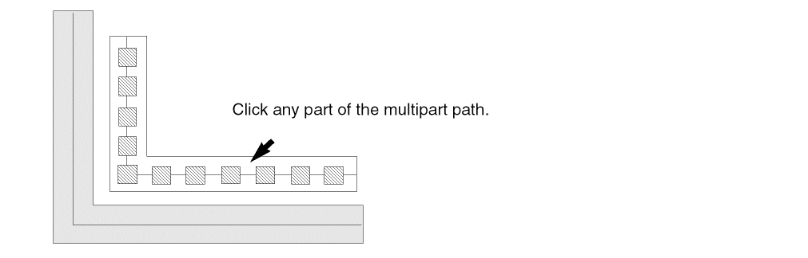

Moving Multipart Paths
When you move a multipart path within a cellview, its master path and subparts move together. You cannot move the master path separately from its subparts, nor can you move subparts separately from the master path.
When you move a multipart path, objects aligned to the multipart path move with it. To retain alignments when you move a multipart path to a new cellview, all objects aligned with the multipart path must be part of the selected set. If aligned objects are not selected, they are not moved and the alignments is broken. In the following example, the multipart path path1 is the reference object. Via B in instance nTrans1 is aligned to path1, with a separation of -10 units in the direction of the X axis. Therefore, nTrans1 behaves as if it is aligned to path1. When you move path1, nTrans1 moves with it.

The system automatically recalculates the alignment of objects when you open a layout cellview in edit mode or edit an aligned object in any way.
- In the layout window, choose Edit – Move.
-
In full selection mode, choose the multipart path by clicking on the master path or any subpart.
 -
Click at the location where you want to place the multipart path; the aligned objects follow.
The multipart path and all objects aligned to it appear in the new location.
Related Topics
Return to top